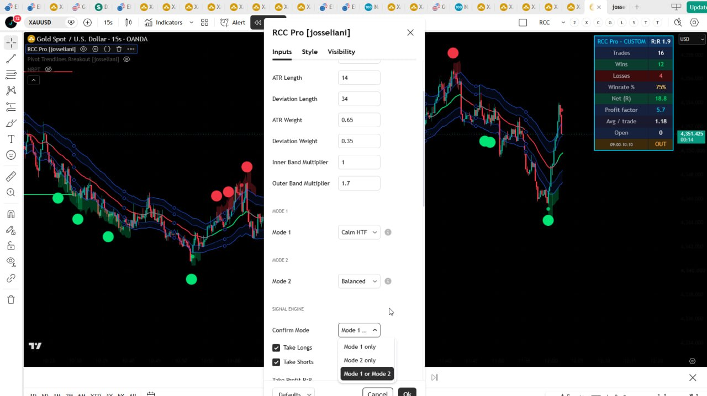

REVERSAL CLOUD CHANNEL
RCC Pro
See the channel. Recognise the setup. Plan your risk.
TRADINGVIEW INDICATORS · BY JOSSELIANI
Spot the setup, set your alerts and return when there’s something to assess. Two tools to make your next trading decision clearer.
See the channel. Recognise the setup. Plan your risk.
Follow the retest. Choose your confirmation. Get an alert.
Real chart recordings. Examples illustrate the interface, not future returns.
RCC PRO / MAKE IT YOURS
Choose how the modes work together, then set your trading hours. Follow the signals within your chosen rules — and use the table to review the results.
You don’t need to adjust everything.
Start with what matters.

Selected areas from real settings screens.
RCC PRO / SIGNAL STATISTICS
Choose your mode combination and trading hours, then evaluate historical signals. The table tracks trade count, Win Rate and Profit Factor so you can compare settings for the specific market you trade.
RCC PRO / TRY THE CALCULATION
Enter your prices and risk. See the position size before placing a trade. In RCC Pro, the risk calculator is right on your chart.
Especially useful when you need to stay within a fixed risk limit, including a prop evaluation.
Try the calculator here ↓
START FREE. GO FURTHER WITH PRO.
| Feature | RCC · Free | RCC Pro |
|---|---|---|
| Channel & reversal context | Included | Included |
| Trade signals | — | Included |
| Signal statistics | — | Included |
| Risk & position sizing | — | Included |
RSI BOTTOM/TOP RETEST SCALPER PRO
The first RSI extreme is only the beginning. Compare Fast and Smart Entry, adjust the Kijun line or another confirmation line and the waiting window for your instrument.
FREE RSI VS RSI PRO
| Feature | RSI Retest · Free | RSI Retest · Pro |
|---|---|---|
| Setup logic | RSI extreme → cooldown → retest → price confirmation | Retest with Fast and Smart Entry choices |
| Confirmation line | Choose a confirmation line | More control over confirmation and the waiting window |
| Historical outcomes | Study signals on the chart | Target statistics and detailed trade results |
| Alerts | Basic conditions where available | Alerts for the conditions you choose |
| Get started | Open the free indicator ↗︎ | Explore Pro ↓ |
A WORKFLOW YOU CAN MAKE YOUR OWN
Change the confirmation line, waiting window and trading hours. See how the statistics and signal count change. Let the sample guide your settings rather than one attractive setup.
Historical results depend on the market, period and settings. Changing parameters does not guarantee better future trades.

CHOOSE YOUR ACCESS
TradingView Paid Space
RCC Pro + RSI Retest Scalper Pro in one subscription
Have a question before you subscribe? Telegram ↗︎
Indicators support your decisions; they do not guarantee profitable trades.
TRADER FEEDBACK
Real comments from TradingView and Whop.
03 / BEYOND MY CHART
Explore published reviews of the free indicators, independent ports and technical comparisons. See what each source examined — and open the original.
Reviews, technical projects and international articles.
Each card links directly to its source.
Ratings and observations belong to their respective publishers. Technical matching verifies calculations, not trading profitability. No partnership or endorsement is implied. Coverage information is from the supplied October 2026 press kit.
02 / THE TOOLBOX
Different questions need different tools. Find a starting point for structure, trend, volume or reversal research.
METATRADER 5 / FREE INDICATOR
Colored TMA Trend Signals shows the trend with a coloured TMA, optional bands and confirmed BUY/SELL signals.
ABOUT US & OUR APPROACH
We are a team of traders and developers with years of experience in financial markets.
We develop tools based on our own trading experience, market analysis, and historical data.
Our goal is to make complex market behavior easier for you to understand and help you make more informed trading decisions.
EDUCATION & MARKET REVIEWS
My market reviews and practical explanations. Historical examples, not current trade recommendations.
A 1:3.5 setup on Tuesday, two clean targets on Thursday, one Expansion signal — and two targets we did not count, and why.
Read the review →Range-to-range moves, Expansion signals, one stop-loss and a countertrend setup during a powerful selloff.
Read the review →Return and Expansion signals on M1 using default settings. A historical chart study, not a return forecast.
Read the review →Divergence warns of weakening momentum. A break in local price structure provides the next piece of confirmation.
Read review on TradingView ↗︎Why an RSI extreme is the start of an investigation. Watch the retest and price-confirmation workflow.
Win rate counts winning trades. It does not tell you how large the wins and losses were. Profit Factor compares total realized profits with the absolute value of total realized losses.
Profit Factor = total profits ÷ total losses
Illustrative example: six wins of $100 and four losses of $200 give a 60% win rate, but PF = 600 ÷ 800 = 0.75. More winning trades did not produce a profitable sample.
A planned risk/reward ratio describes an individual setup. Profit Factor describes the recorded sample. Neither replaces the other. Check trade count, drawdown, costs and results across different periods before drawing conclusions.
TradingView: Profit Factor ↗︎BEFORE YOU START
The two Pro products shown here run on TradingView. The free Colored TMA Trend Signals MT5 edition is available through MQL5. RCC Pro’s broker-aware risk calculator can assist position sizing for MT5 accounts; that does not make the TradingView indicator an MT5 indicator or an automated execution system.
Choose your product and complete your purchase on Whop. Follow the access instructions there and provide your correct TradingView username when requested. Free tools can be opened from their TradingView publication pages.
Choose RCC Pro if you want an adaptive channel, reversal context and a risk-planning workflow. Choose RSI Bottom/Top Retest Scalper Pro if your focus is RSI retests, price confirmation and comparing scalping entries. The free library is a useful way to explore the approach first.
English and Russian client guides have been prepared for both Pro products, with practical settings and chart examples. The guides cover configuration and interpretation; settings should be tested for your own market and timeframe.
No. Results depend on the instrument, timeframe, configuration and sample. Historical target statistics are not a promise of future performance. Trading costs, execution and your management decisions also affect live results.
YOUR CHART. YOUR DECISION.